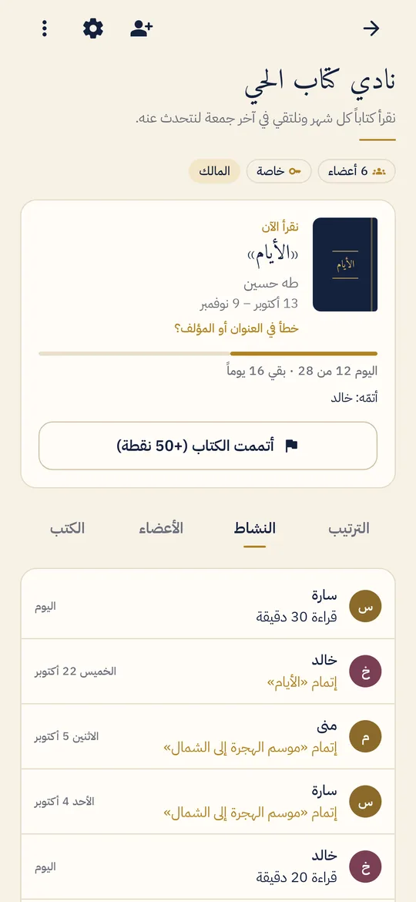
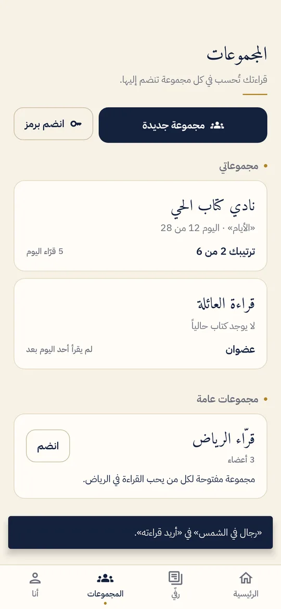
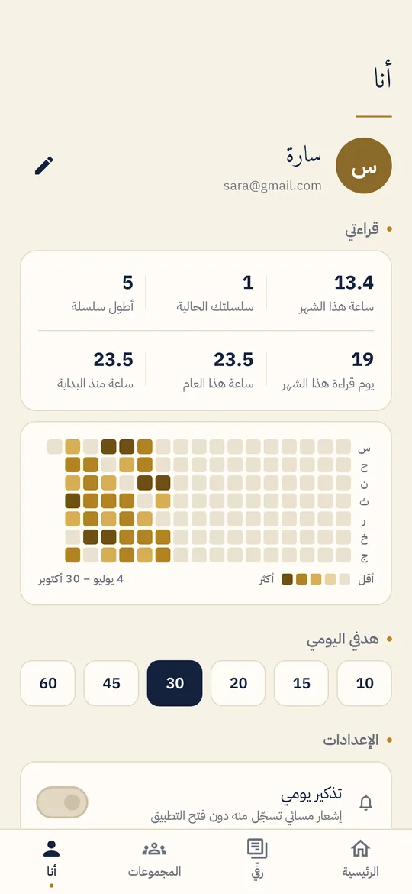

نصف ساعة كل يوم مع أصدقاء يقرؤون الكتاب نفسه أسهل من كتاب كامل وحدك.وكلما سهُل التسجيل، استمرّ الناس. لذلك يكفيه لمسة واحدة.
قراءتك أنت، ومجموعاتك تحتفل بها
تسجّل مرة واحدة، فتُحسب دقائقك في كل مجموعة أنت فيها.
تسجيل بلمسة
زر يضيف 15 أو 30 أو 45 أو 60 دقيقة إلى اليوم، مع «تراجع». وتعديل أي يوم من آخر أسبوعين.
مؤقت وإشعار
شغّل المؤقت وأنت تقرأ، وأوقفه من الإشعار. وفي تذكير المساء أزرار تسجّل منها دون فتح التطبيق.
مجموعات
للأصدقاء والعائلة ونوادي القراءة. خاصة برمز دعوة، أو عامة يجدها أي قارئ.
كتاب مشترك
لكل فترة كتاب ومدة، مع ترتيب المجموعة، ومن قرأ اليوم، ومن أتمّ الكتاب.
نقاط وترتيب
نقطة لكل 10 دقائق، و50 لإتمام الكتاب (تغيّرها المجموعة). شارك الترتيب في واتساب بلمسة.
هدفك وأرقامك
هدف يومي شخصي، أيام متتالية، ساعات الشهر والعام، وخريطة قراءتك.
شاشات التطبيق





ثلاث خطوات
- ادخل واختر اسمكبحساب Google أو دون حساب، ثم هدفك اليومي.
- أنشئ مجموعة أو انضم إليهاشارك رمز الدعوة أو رابطها، واختر الكتاب المشترك ومدته.
- سجّل كل يومبلمسة أو بالمؤقت أو من الإشعار. الترتيب والنشاط يتحدّثان للجميع فوراً.
من يفعل ماذا
| الدور | ما يستطيعه |
|---|---|
| العضو | يسجّل قراءته، ويعلن إتمام الكتاب، ويرى الترتيب والنشاط. |
| المشرف | يضيف الكتب، ويدير الأعضاء ورمز الدعوة، ويسجّل لمن لا يستخدم التطبيق. |
| المالك | كل ما سبق، ويعيّن المشرفين، وينقل الملكية، ويحذف المجموعة. |
ثبّته في دقيقة
- حمّل الملفاضغط «حمّل التطبيق» من هاتف أندرويد.
- افتحهمن الإشعارات أو مجلد التنزيلات. إن طُلب «السماح بالتثبيت من هذا المصدر» فاسمح به للمتصفح.
- إن ظهر Play Protectاختر «تفاصيل إضافية» ثم «التثبيت على أي حال». التطبيق ليس على متجر Play بعد، لذلك يظهر هذا التنبيه.
أسئلة شائعة
هل التطبيق مجاني؟
نعم، بلا إعلانات وبلا اشتراكات.
هل يعمل على الآيفون؟
حالياً أندرويد فقط (الإصدار 8 فأحدث).
أنا في أكثر من مجموعة. هل أسجّل لكل واحدة؟
لا. تسجّل مرة واحدة، وتُحسب دقائقك في كل مجموعاتك.
أين تُحفظ بياناتنا؟
في Google Firebase على خوادم في الدمام. سجلّ قراءتك الشخصي لا يراه غيرك، وبيانات المجموعة يراها أعضاؤها فقط. التفاصيل في سياسة الخصوصية.
هل أحتاج حساباً؟
لا. ويمكنك ربط حساب Google لاحقاً من صفحة «أنا» لتصل إلى بياناتك من هاتف آخر.
بعض أعضاء مجموعتنا لا يستخدمون التطبيق
يضيفهم المشرف بالاسم ويسجّل عنهم. وإن ثبّتوه لاحقاً يُدمج تاريخهم في حساباتهم.
كانت مجموعتنا تستخدم نموذج Google. هل نخسر السجلّ القديم؟
لا. من إعدادات المجموعة ← «استيراد من نموذج Google» اختر ملف CSV للردود.
كيف أحدّث التطبيق؟
حمّل الإصدار الجديد من هذه الصفحة وثبّته فوق القديم.
ابدأ القراءة اليوم
أنشئ مجموعة لأصدقائك، وشارك رمز الدعوة، واختاروا كتابكم الأول.
حمّل ماراثون القراءة